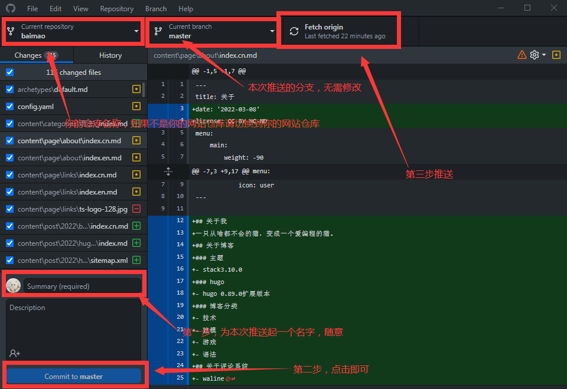

vercel ｜ 将博客部署在vecrel上
2022年03月08日
2732 字
目录
简介
概述
由于github访问速度不佳以及有时无法访问所以需要将博客部署在其他的地方，推荐使用vercel。vercel默认会给我们分配一个.vercel.app的二级域名。并且vercel还能做到自动部署『作者不是很懂这个，只知道要推送到github仓库上而已。』
相关链接
vercel
创建hugo模板
注册完vercel后打开vercel创建模版之后在页面中找到并点击Browse All Templates在里面找到hugo之后你会看到 选择github然后会让你输入这个项目的名称『名称随意，如：你的网站名称』，名称填写完毕后点击右下角的蓝色按钮。
选择github然后会让你输入这个项目的名称『名称随意，如：你的网站名称』，名称填写完毕后点击右下角的蓝色按钮。
报错
在创建时你会发现下方的一个会有一个感叹号，这种情况是因为vercel的hugo版本太低了，所以我们要给他指定一个hugo版本。在页面上方点击settings按钮进入设置页面，在设置页面中打开Environment Variables在打开的页面中找到NAME填入HUGO_VERSION VALUE中填入0.89.0『当然你也可以使用新版本』完成后点击右下角的Add按钮再到Deployments页面中找到竖着的3个点并点击在弹出的窗口中点击Redeploy这样就会重新部署，“稍稍”等待一会后你的blog就部署成功了。
Import已存在的hugo仓库
首先需要创建一个仓库，之后把你的blog推送上去『注意：此推送请把public文件夹删除，只推送博客文件夹』。
克隆到本地
首先找到你要克隆到的地方，之后打开你的Github Desktop在主页找到File在页面中找到Clone repository然后选择你的博客所在的仓库。之后这个仓库就会被克隆到本地了『你所指定的目录中』，克隆完毕后第一件事肯定是给博客装上主题了『你不装也可以，vercel会自动给你分配一个不知道在哪找的主题。』。找到你克隆到本地的文件夹，在文件夹中打开themes在里面会发现一个叫做『我忘了以后再看看吧，这个不是主题名字，你到时自己看吧我懒得再创建一个了。』这个等会是要删除的当然你也可以现在删除，安装Stack主题个人觉得Stack这样卡片式主题很好看，非常推荐使用此主题现在hugo使用此主题的人还算比较“多”。
安装主题
会下载安装hugo主题的可以跳过了
简介
此教程虽适用于
Stack以及其它主题但，如果使用其他主题还是请仔细观看此主题作者的官方文档。
此教程的演示主题为
Stack
其实这个教程跟hugo ｜ 如何使用hugo搭建网站并部署到github差不多只是少了一些部署和命令行的操作
下载主题
方法1『下载』：
找到你要使用的主题，这里以Stack主题为例，在打开的页面中点击Download点击后会跳转到这个主题的Github页面，点击绿色的Code按钮选择Download ZIP之后就会下载这个主题了。
方法2『Fork及克隆』：
找到你要使用的主题，这里以Stack主题为例，在打开的页面中点击Download点击后会跳转到这个主题的Github页面，点击页面上方的Fork按钮之后这个仓库就会Fork到你的账户下了。之后打开Github Desktop将仓库克隆到本地。
安装
将下载的压缩包解压『直接解压会导致各种各样的问题，所以请先放的一个文件夹里再解压，或者把它解压到一个空的文件夹里』，解压后剪切或复制粘贴到Themes文件夹下。或将克隆到的文件夹剪切或复制粘贴到Themes文件夹下。
注意：你的主题文件夹可以随意命名但请注意，config配置文件中要填写的是文件夹的名字，如果我的文件夹为
Stack则需要在配置文件中填写Stack如果我的文件夹为hugo-Stack则填写hugo-Stack。
安装2
此教程也是必须的。
在主题文件夹中找到exampleSite将里面的content文件夹config.yaml文件复制到博客文件夹中例如：E:/hugo中并将config.toml文件删除。
汉化『如果你想将你的博客改为中文就跟着教程做』：
在主题文件夹中找到i18n文件夹，在i18n文件夹中找到zh-cn改为cn『经过测试如果不改名会导致一些地方汉化失效，仅测试过1次，作者也不确定』。之后回到根目录，打开config.yaml文件按照此代码进行修改
|
|
推送到github仓库上
打开你的Github Desktop按照此图片操作 